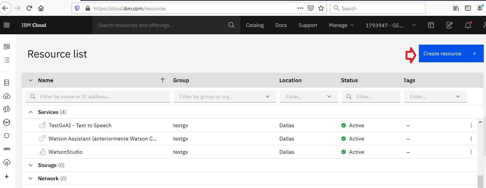

To use IBM Watson services, you need to configure the Watson Assistant API services: First, log in to IBM and create a new Watson Assistant Service by clicking on "Create resource."  After creating the Service, you can see it in the Services list: There you can get the Service credentials to set the credentials in GeneXus. To learn more, read Service credentials for Watson services (Updating service credentials section). SkillsEach Conversational Flows object generates a different skill (formerly workspace). To do so, click on "Launch Watson Assistant": Then select Skills from the left menu. The skill structure (entities and entity values, training triggers, and the dialogue) is created and mantained by the Chatbot Generator. |
| Backlinks | ||
| API Key property | Authentication Type property | Toc:Chatbots in GeneXus |
| Configuring GeneXus for using the Chatbot Generator | Region property | |
| Workspace Id property |